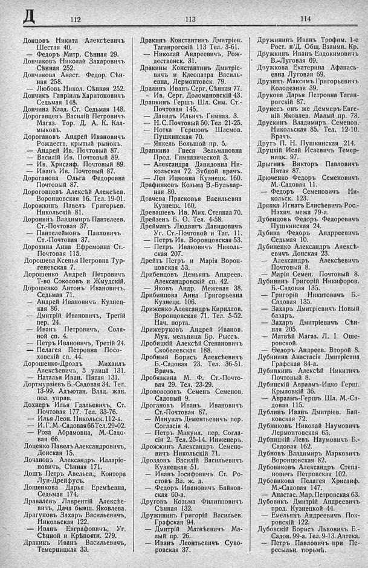

Лист источника 388
Скан

Распознанный текст
Д 112 113 114
Донцовъ Никита Алексѣевичъ
Шестая 40.
— Федоръ Митр. Сѣнная 29.
Дончиковъ Николай Захаровичъ
Сѣнная 252.
Дончикова Анаст. Федор. Сѣн-
ная 258.
— Любовь Никол. Сѣнная 252.
Дончикъ Гавріилъ Харитоновичъ
Седьмая 148.
Дончина Клад. Ст. Седьмая 148.
Дорогавцевъ Василій Петровичъ
Магаз. Тор. Д. А. К. Кал-
мыковъ.
Дорогановъ Андрей Ивановичъ
Рождеств. крытый рынокъ.
— Андрей Ив. Почтовый 87.
— Василій Ив. Почтовый 89.
— Ив. Хрисанф. Почтовый 89.
— Иванъ Ив. Почтовый 87.
Дороганова Ольга Федоровна
Почтовый 87.
Дороговцевъ Алексѣй Алексѣев.
Воронцовская 16. Тел. 19-01.
Дорожкинъ Павелъ Григорьев.
Никольскій 81.
Доронинъ Владимиръ Пантелеев.
Ст.-Почтовая 37.
— Пантелеймонъ Павловичъ
Ст.-Почтовая 37.
Дорохина Анна Ефремовна Ст.-
Почтовая 115.
Дорошева Ксенья Петровна Тур-
геневская 7.
Дорошенко Андрей Петровичъ
Т-во Соколовъ и Жмудскій.
Дорошенко Антонъ Ивановичъ.
Седьмая 71.
— Андрей Ивановичъ Кузнец-
кая 86.
— Дмитрій Ивановичъ, Третій
пер. 24.
— Иванъ Петровичъ, Соля-
ной сп. 4.
— Петръ Ивановичъ, Третій 24.
— Пелагея Петровна Посо-
ховскій сп. 44.
Дорошенко-Дроздъ Михаилъ
Алексѣевичъ, 5 улица 131.
— Наталья Иван. Пятая 131.
Дортмурзіевъ Б.-Садовая 34. Тел.
13-99. Адъютан. Влад. жан.
пол. управ.
Дохнеръ Илья Гдальевичъ, Ст.
Почтовая 177. Тел. 33-76.
— Илья Леон. Никольск. 112-а.
— И. Г. М.-Садовая 66 Тел. 29-02.
— Роза Абрамовна, М.-Садо-
вая 66.
Доценко Павелъ Александровичъ,
Донская 15.
Дочановъ Александръ Илларіо-
новичъ, Сѣнная 171.
Дошъ Петръ Авельев., Контора
Луи-Дрейфусъ.
Дощенкова Дарья Еремѣевна,
Седьмая 174.
Дравалевъ Лаврентій Алексѣе-
вичъ, Дача бывш. Яковлева.
Драгуновъ Захаръ Васильевичъ,
Никольская 122.
— Иванъ Евграфовичъ, Уг.
Сѣнной и Крѣпостн. 279.
Дракинъ Иванъ Васильевичъ,
Темерницкая 33.
Дракинъ Константинъ Дмитріев.
Таганрогскій 113 Тел. 3-61.
— Николай Андреевичъ, Рож-
дественск. 31.
Дракины Константинъ Дмитріе-
вичъ и Клеопатра Василь-
евна, Лермонтовск. 79.
Дралинъ Иванъ Серг. Сѣнная 77.
— Ив. Серг. Доломановскій 43.
Драпкинъ Гершъ Шл. Сим. Ст.-
Почтовая 145.
— Давидъ Ильичъ Гимназ. 3.
— Н. С. Почтовый 50. Тел. 21-25.
— Нотка Гершовъ Шлемов.
Пушкинская 70.
— Янкель Большой пр. 5.
Драпкина Гнеся Зельмановна
Прод. Гимназической 3.
— Александра Давидовна Ни-
кольская 72. Зубной врачъ.
— Лея Ицковна Кузнецк. 160.
Драфинковъ Козьма В.-Бульвар-
ная 80.
Драчева Прасковья Васильевна
Кузнецк. 160.
Древашевъ Ив. Мих. Степная 70.
Дрейзенъ Б. О. Тел. 4-58.
Дрейманъ Людвигъ Давидовичъ
Уг. Ст.-Почтовой и Таг. 11.
— Петръ Ив. Воронцовская 53.
— Петръ Ивановичъ Николь-
ская 207.
Дрейтъ Петръ и Марія Ворон-
цовская 53.
Дрибенцовъ Демьянъ Андреев.
Александровскій сп. 42.
— Яковъ Андр. Межевая 38.
Дрибинцова Анна Григорьевна
Кузнецк. 106.
Дриженко Александръ Кириллов.
Воронцовская 71. Тел. 5-52.
Нач. порта.
Дрижеруковъ Андрей Иванов.
Мук. мельница Бр. Рыссъ.
Дробицкій Алексѣй Степановичъ
Скобелевская 188.
Дробный Борисъ Алексѣевичъ
Б.-Садовая 23. Тел. 36-51.
Врачъ.
Дробязкина М. Ф. Ст.-Почто-
вая 29. Тел. 23-29.
Дрововозовъ Семенъ Семенов.
Садовый 9.
Дрогановъ Иванъ Ивановичъ
Ст.-Почтовая 87.
— Мануилъ Дементьевичъ пер.
Согласія 4.
— Петръ Мануил. пер. Согла-
сія 2. Тел. 25-14. Инженеръ.
Дрожжинъ Александръ Семено-
вичъ Никольскій 71.
Дроздовъ Василій Васильевичъ
Кузнецкая 51.
— Иванъ Іосифовичъ Ст. Ро-
стовъ Вл. ж. д.
— Федоръ Ивановичъ Байков-
ская 60-а.
Друговъ Козьма Филипповичъ
Сѣнная 132.
Дружининъ Григорій Васильев.
Графская 94.
— Дмитрій Матвѣевичъ Ма-
лый пр. 26.
— Иванъ Леонтьевичъ Суво-
ровская 37.
Дружининъ Иванъ Трофим. 1-е
Рост. н/Д. Общ. Взаимн. Кр.
Дружкинъ Иванъ Евдокимовичъ
В.-Луговая 69.
Доужкова Екатерина Афанась-
евна Луговая 69.
Друзинъ Максимъ Григорьевичъ
Колодезная 39.
Друкова Дарья Петровна Таган-
рогскій 87.
Друнесъ онъ же Деммеръ Евге-
ній Яковлев. Малый пр. 78.
Друскинъ Владимиръ Семенов.
Никольская 85. Тел. 12-10.
Врачъ.
Другъ П. Н. Пушкинская 214.
Друцкій Исай Исаевичъ Темер-
ницк. 97.
Дрыгинъ Викторъ Павловичъ
Пятая 87.
Дрюченко Федоръ Семеновичъ
М.-Садовая 11.
— Федоръ Семеновичъ Ни-
кольск. 123.
Дряпка Игнатъ Елисѣевичъ Рос.-
Нахич. межа 79-а.
Дубенцовъ Федоръ Федоровичъ
Пушкинская 24.
Дубина Федоръ Андреевичъ
Седьмая 10.
Дубиненко Александръ Алексѣ-
евичъ Донская 23.
— Александръ Алексѣевичъ
Почтовый 8.
— Марія Семен. Почтовый 8.
Дубининъ Григорій Никифоров.
Б.-Садовая 135.
— Григорій Никитовичъ Б.-
Садовая 135.
— Захаръ Дмитріевичъ Новый
базаръ.
— Захаръ Дмитріевичъ Сѣн-
ная 205.
— Матвѣй Магаз. Л. І. Оше-
ровской.
— Ѳедоръ Андреев. Второй 8.
Дубинина Анастасія Дмитріевна
Графская 84-а.
Дубинкинъ Алексѣй Никитичъ
Почтовый 8.
Дубинскій Авраамъ-Ицко Герш.
Крыловкій 36.
— Авраамъ-Гершъ Шл. М.-Са-
довая 115.
Дублинъ Иванъ Дмитріев. Бай-
ковская 72.
Дубниковъ Николай Наумовичъ
Лермонтовская 65.
Дубницкій Левъ Наумовичъ Б.-
Садовая 162.
Дубновъ Владимиръ Марковичъ
Воронцовская 82.
Дубовиковъ Александръ Степа-
новичъ Петровская 102.
Дубовикова Пелагея Хрисанф.
М.-Садовая 147.
— Анастас. Мар. Петровская 63.
Дубовикъ Дмитрій Андреевичъ
прод. Кузнецкой 44.
— Емельянъ Андреевичъ Пок-
ровскій 122.
Дубовскій Борисъ Львовичъ Б.-
Садов. 99-а. Тел. 9-13. Аптека.
— Петръ Павловичъ при Пе-
ресыльн. тюрьмѣ.